INF115
Kapittel 1 - Introduksjon
- DIK(W)-pyramiden: Data information knowledge wisdom
Databaseobjekter
-
Tabeller
-
Spørringer og views
- Spørringer definerer tabeller ved å legge til eller slette data
- View en en virtuell tabell definert ved en spørring
Systemkatalog
-
Metadata
- Data om data lagret i systemkatalogen
-
Access rights
Lagrede programmer
- SQL kombinert med andre språk
Database-livsløp
- Forstudie
- Analyse
- Design
- Implementasjon
- Testing
- Produksjon
Kapittel 2 - Spørringer mot én tabell
Kapittel 3 - Lage og bruke tabeller
Datatyper
- CHAR(n), VARCHAR(n)
- SMALLINT, INTEGER, BIGINT
- NUMERIC(p,s), DECIMAL
- FLOAT, DOUBLE
- DATE, TIME, TIMESTAMP
- INTERVAL
- BOOLEAN
- CLOB(n), BLOB(n)
Opprette nye tabeller
-
CREATE TABLE Vare
(
VNr CHAR(5),
Betegnelse VARCHAR(50),
Pris DECIMAL(8,2),
KatNr SMALLINT,
Antall INTEGER,
Hylle CHAR(3),
CONSTRAINT VarePN PRIMARY KEY(VNr)
)
Primærnøkler
- Skal ikke inneholde nullmerker eller repitisjoner
- CONSTRAINT definerer primærnøkkelen og sjekker for nullmerker eller repitisjoner
- Fjerne primærnøkkel med:
ALTER TABLE Vare DROP CONSTRAINT VarePN
eller
ALTER TABLE Vare DROP PRIMARY KEY
- Når primærnøkkelen består av en enkel kolonne:
VNr CHAR(5) PRIMARY KEY
Sammensatte primærnøkler
- Kombinerer flere kolonner for å lage primærnøkler
- Når det er repitisjoner i en eller flere primærnøkler, vil det ikke forekomme repitsjoner i kombinasjonen av de to kolonnene
CREATE TABLE Ordreline(
OrdreNr INTEGER,
VNr CHAR(5),
PrisPrEnhet DECIMAL(8,2),
Antall INTEGER,
CONSTRAINT OrdrelinjePN
PRIMARY KEY (OrdreNR, VNr)
)
Autonummererte nøkler
-
Ofte surrogatnøkler(Entydig identifikasjon)
-
Systemet fyller inn verdier automatisk i kolonnene
-
Kan bruke sekvenser som legger inn nye tall for hver rad
Håndtering av nullmerker
-
Filtrere ut nullmerker i spørring:
-
Omorganisere data i en annen data i en annen database
Unike kolonner
Kandidatnøkkel
- Er en kolonne man kan definere med både NOT NULL og UNIQUE, en mulig primærnøkkel
Standarverdi
Fremmednøkler
-
Logisk sammenkoling av tabeller
-
Tar en primærnøkkel fra en tabell og bruker i den andre slik at den er begge steder
-
CREATE TABLE Ordrelinje
(
OrdreNr INTEGER,
VNr CHAR(5),
PrisPrEnhet DECIMAL(8,2),
Antall INTEGER,
CONSTRAINT OrdrelinjePN
PRIMARY KEY(OrdreNr, VNr),
CONSTRAINT OrdrelinjeOrdreFN
FOREIGN KEY (OrdreNR)
REFERENCES Ordre (OrdreNr),
CONSTRAINT OrdrelinjeVareFN
FOREIGN KEY (VNr)
REFERENCES Vare (VNr)
)
-
VNr er primærnøkel i Vare og fremmednøkkel i Ordrelinje
-
En-til-mange forhold
-
I sammensatte primærnøkler, må enten alle eller ingen av kolonnene inneholder nullmerker
Massesletting
CONSTRAINT OrdrelinjeVareFN
FOREIGN KEY(VNr)
ON DELETE CASCADE elle
- ON DELETE kan erstattes med ON UPDATE
- ON CASADE kan erstatte med SET NULL
CHECK
CONSTRAINT Prisregel
CHECK (Pris > 0 AND Pris < 10000)
Begrensning med fremmednøkler
- Begrenser lovlige farger:
CONSTRAINT Fargeregel
CHECK (Farge IN('rød', 'blå', 'gul'))
- I tilfelle over ville det vært nødvendig å redefinere hele tabellen dersom en skulle lagt til noe nytt i lovlige farger
- Lag en ny tabell og innfør samme regel som over, bare med en fremmednøkkel til den nye tabellen i stedet
CREATE TABLE Lovligfarge
(
Farge VARCHAR(50),
CONSTRAINT FargePN PRIMARY KEY (Farge)
)
Innsettingsspørringer
Slettespørringer
Oppdateringsspørringer
CSV filer
LOAD DATA INFILE 'kunde.csv'
INTO TABLE Kunde
FIELDS TERMINATED BY ';'
LINES TERMINATED BY '\r\n'
IGNORE 1 ROWS
Transaksjoner
Endre og slette databaser
Databaser og Databaseobjekter
SQL Scripts
- Sekvens av SQL spørringer
Kapittel 4 - Spørringer mot flere tabeller
Kryssprodukt
- For å unngå redundans(gjentatt informasjon)
- Resultatet av to tabeller
- Uten betingelser i spørringene blir resultattabellen fra spørringen alle radene i alle tabellene ganget med hverandre
- Inneholder alle mulige radkombinasjoner
Indre koblinger
- Spørringer for å unngå for stort kryssprodukt
Likekoblinger
- Restriksjon for kryssprodukt
- To kolonner er unionkompitable hvis kolonnene inneholder samme slags data(er i samme domene)
- Likekoblinger er radene i T1 og T2 som har samme verdi i koblingskolonnene
- Kan være sammensatte gitt at de er unionskompitable
SELECT *
FROM Ordre, Kunde
WHERE Ordre.KNr = Kunde.KNr;
Kortnavn
SELECT OrdreNr, OrdreDato, O.KNr, Etternavn
FROM Ordre AS O, Kunde AS k
WHERE O.KNr = K.KNr;
Syntax for likekoblinger
SELECT OrdreNr, OrdreDato, O.KNr, Etternavn
FROM Ordre AS O INNER JOIN Kunde AS K ON O.KNr = K.KNr
SELECT KNr, K.Etternavn, AnsNr, A.PostNr
FROM Kunde AS K INNER JOIN Ansatt AS A ON K.PostNr = A.Post.Nr
SELECT VNr, Dato, AnsNr, GammelPris
FROM Ordre AS O INNER JOIN PrisHistorikk AS PH
ON O.OrdreDato = PH.Dato
WHERE O.KNr = 5009
Naturlig kobling
- Likekobling basert på tabeller med parvis samme navn på kolonner der vi bare tar med av kolonnene fra hvert par
SELECT *
FROM Ansatt NATURAL JOIN Poststed
SELECT Ansatt.*, Poststed.Poststed
FROM Ansatt INNER JOIN Poststed
ON Ansatt.PostNr = Poststed.PostNr
Kobler tre eller flere tabeller
SELECT Ordre.*, Fornavn, Etternavn, Poststed
FROM Ordre INNER JOIN
( Kunde INNER JOIN Poststed
ON Kunde.PostNr = Poststed.PostNr )
ON Ordre.KNr = Kunde.KNr;
Grupperinger og likekoblinger
- Finner samlet salg for varer i en bestemt kategori
SELECT V.VNr,
SUM(OL.Antall * OL.PrisPrEnhet) AS SamletSalg
FROM Ordrelinje AS OL, Vare AS V
WHERE OL.VNr = V.VNr AND V.KatNr = 3
GROUP BY V.VNr
- Samme spørring men, med informasjon om kunden
SELECT K.KNr, Etternavn, COUNT(*) AS Antall
FROM Kunde AS K, Ordre AS O
WHERE K.KNr = O.KNr
GROUP BY K.KNr, Etternavn
Egenkoblinger
- Likekobling mellom to "kopier" av den samme tabellen
- Brukes for sammenlikning av radene i en tabell
SELECT A1.AnsNr, A1.Etternavn, A1.Fornavn,
A2.AnsNr AS LederNr, A2.Etternavn AS LederNavn
FROM Ansatt AS A1, Ansatt AS A2
WHERE A1.Leder = A2.AnsNr
ORDER BY A2.Etternavn, A1.Etternavn, A1.Fornavn
Generelle koblinger
- Bruker "=", "<=", "=>" eller "<>" for å plukke ut kombinasjoner
SELECT *
FROM Kunde AS K1, Kunde AS K2
WHERE K1.Etternavn = K2.Etternavn
AND K1.Adresse = K2.Adresse
AND K1.KNr < K2.KNr
Mengdeoperasjoner og ytre koblinger
Venstre og høyre ytre kobling
- Ytre koblinger tar med de resultatene vi er interessert i som matcher direkte med spørringer vår, men også samtlige resultater fra listen som ikke direkte går under matchen vår
- "Ekstra rader fra en likekobling"
- Venstre og høyre avhengig av hvilken tabell vi er interessert i de ekstra radene fra
SELECT *
FROM Ordre AS O
RIGHT OUTER JOIN Kunde AS K
ON K.KNr = O.KNr
SELECT * FROM T1
LEFT OUTER JOIN T2
ON T1.X = T2.Y
SELECT * FROM T2
RIGHT OUTER JOIN T1
ON T1.X = T2.Y
SELECT K.KNr, Etternavn, COUNT(O.OrdreNr) AS Antall
FROM Kunde AS K LEFT OUTER JOIN Ordre AS O
ON K.KNr = O.KNr
GROUP BY K.KNr, Etternavn
Union, snitt og differanse
- To spørringer er unionskompatible hvis de har like mange kolonner, og kolonnene er parvis unionskompitabl
- Trenger ikke ha like navn
- UNION slår sammen unionkompatible resultater
- INTERSECT slår sammen til en "både" funksjon
- EXCEPT beregner mengdedifferanse
SELECT DISTINCT KNr
FROM Ordre
WHERE YEAR(OrdreDato) = 2018 OR YEAR(OrdreDato) = 2019
(kunne erstattet OR med AND og fått bådei 2018 og 2019)
SELECT KNr FROM Ordre2018
UNION
SELECT KNr FROM Ordre2019
Full ytrekobling
- Tilsvarer en venstre og høyre ytrekobling
SELECT VNr, Betegnelse, Navn
FROM Vare AS V FULL OUTER JOIN Kategori AS K
ON V.KatNr = K.KatNr
Kapittel 5 - Avanserte spørringer
Case
- Hvis betingelsen er sann, gjør A
- Ellers gjør B
- (IF i mysql)
SELECT VNr, Betegnelse, Pris,
CASE
WHEN Pris<100 THEN 'Billig'
WHEN Pris <=500 THEN 'Middels'
ELSE 'Dyr'
END AS Prisklasse
FROM Vare
SELECT AnsNr, Etternavn,
CASE Kjønn
WHEN 'K' THEN 'Kvinne'
WHEN 'M' THEN 'Mann'
END
FROM Ansatt
Erstatte nullmerker
SELECT AnsNr, Etternavn, COALESCE(Kjønn, 'U') AS Kjønn
FROM Ansatt
Views
CREATE VIEW Keramikk(VNr,Navn,Antall) AS
SELECT VNr, Betegnelse, Antall
FROM Vare
WHERE KatNr=3
DROP VIEW Keramikk
- Ikke alle views kan oppdateres:
CREATE VIEW AntallVarerPrKategori AS
SELECT KatNr, COUNT(*) AS ANTALL
FROM Vare
GROUP BY KatNr
- Views basert på spørringer mot flere tabeller:
CREATE VIEW VarerMedKategoriNavn(VNr, VKatNr, Navn) AS
SELECT V.VNr, V.Betegnelse , V.KatNr, K.KatNr, K.Navn
FROM Vare AS V, Kategori AS K
WHERE V.KatNr = K.KatNr;
UPDATE VArerMedKategoriNavn
SET VKatNr = 3
WHERE VNr = '10820';
- Konstruksjoner som tilsier at views ikke er oppdaterbare
- Det brukes DISTINCT , GROUP BY eller mengdefunksjon
- Pimærnøkkel er ikke med i SELECT
- SELECT inneholder uttrykk med funksjoner eller konstanter
- Delspørringer og koblinger av flere tabeller kan gjøre at viewet ikke er oppdaterbart
Delspørringer
- Kan ha flere spørringer i andre deler av hovedspørringen
SELECT VNr, Pris
FROM Vare
WHERE Pris < (SELECT AVG(Pris) FROM Vare);
SELECT V1.VNr, V1.Pris
FROM Vare AS V1, Vare AS V2
GROUP BY V1.VNr, V1.Pris
HAVING V1.Pris < AVG(V2.Pris);
Vekselvirkende delspørringer
- Hovedspørring og delspørringer samarbeider
SELECT V1.VNr,V1.Pris
FROM Vare AS V1
WHERE V1.Pris =
(SELECT MIN(V2.Pris) FROM Vare AS V2
WHERE V1.KatNr = V2.KatNr)
Operatorer for delspørringer
SELECT *
FROM Kunde
WHERE KNr IN (SELECT KNr FROM Ordre);
SELECT *
FROM Vare
WHERE KatNr IN (2,4,7);
- SOME
- Er kriteriet sant for noen av verdiene som kommer ut?
SELECT *
FROM Kunde AS K1
WHERE Etternavn = SOME
(SELECT Etternavn FROM Kunde AS K2
WHERE K1.KNr <> K2.KNr)
-
ANY
- Kan brukes istedenfor SOME
-
ALL
SELECT *
FROM Vare AS V
WHERE Pris < ALL
(SELECT Gammelpris FROM Prishistorikk AS H
WHERE V.VNr = H.VNr)
- EXISTS
- Sjekke om en delspørring gir et tomt resultat
SELECT *
FROM Vare AS V
WHERE NOT EXISTS
(SELECT *
FROM Ordrelinje AS OL
WHERE V.VNr = OL.VNr
Delspørringer i SELECT
SELECT KNr, Etternavn, Fornavn,
(SELECT MAX(OrdreDato)
FROM Ordre AS O
WHERE O.KNR = K.KNR) AS Dato
FROM Kunde AS K
Delspørringer i FROM
SELECT Kunde.*, SisteOrdreDato
FROM Kunde,
(SELECT KNr, MAX(OrdreDato) AS Dato
FROM Ordre GROUP BY KNr) AS SisteOr
WHERE Kunde.KNr = SisteOrdre.KNr
Delspørringer i INSERT, UPDATE og DELETE
UPDATE Vare
SET Pris= Pris*1.1
WHERE VNr IN
(SEL
GROUP BY VNr
HAVING COUNT(*) > 25);
DELETE FROM Kunde
WHERE NOT EXISTS
(SELECT * FROM Ordre
WHERE Ordre.KNr = Kunde.KNr);
INSERT INTO Prishistorikk(VNr, Dato, GammelPris)
SELECT VNr, CURDATE(), Pris
FROM Vare
Aggregeringssytemer
-
OLTP
- On-line transactional processing
- System med hyppige oppdateringer
- 24/7
- Raske
-
OLAP
- On-line analytical processing
- Data aggregert over tid
- Få oppdateringer
- ad hoc spørringer mot systemet
CUBE
- Datarepresentasjon
- Tankeverktøy
- Tre dimensjoner
- Skjeringspunkt mellom aksene
SELECT VNr, FylkeNr, SUM(Antall) AS Samlet
FROM Salgstall
GROUP BY CUBE(VNr, FylkeNr)
Krysstabellspørringer
SELECT Stilling, Kjønn
COUNT(*) AS Antall, AVG(Årslønn) AS Snitt
FROM Ansatt
GROUP BY Stilling, Kjønn;
SELECT Stilling
ROUND(AVG(IF(Kjønn='K', Årslønn, NULL)), 2) AS K,
ROUND(AVG(IF(Kjønn='M', Årslønn, NULL)), 2) AS M
FROM Ansatt
GROUP BY Stilling;
Rangering og topp 10
SELECT *, RANK() OVER (ORDER BY Pris) AS Rangering
FROM Vare
ORDER BY Pris;
SELECT *
FROM Vare
ORDER BY Pris DESC
LIMIT 10
Rekursjon
SELECT
S1.PNr, S1.Navn, S1.Far, S1.Mor, S2.Far AS Farfar,
S2.Mor AS Farmor,
S3.Far AS Morfar, S3.Mor AS Mormor
FROM
(Slekt AS S1
LEFT OUTER JOIN Slekt AS S2
ON S1.Far = S2.PNr)
LEFT OUTER JOIN Slekt AS S3
ON S1.Mor = S3.PNr
Kapittel 6 - Relasjonsmodellen
Representasjonsuavhengighet
Relasjoner
Mengde
- en samling elementer
- $x \in S$
Logiske konnektiver
- Og: $\land$
- Eller: $\lor$
- Ikke: $\lnot$
- "x er mindre enn 0 og det er ikke slik at y er større enn 0"
Mengde definisjon
Mendge restriksjon
- $T = {x |x\in S \land x<3}$
- For alle elementene $x$, er $x$ både i $S$ og under 3
Den tomme mengde
Delmengde
- $S \subseteq T$
- Alle elementer i $S$ er også i $T$
Ekte delmengde
Integritetesregler
Funksjon
- $f: A \rightarrow B$
- Relasjon over $A$ og $B$
- Hvis $(a_1,b_1)$ og $(a_2,b_2)$ er i $f$ og $a_1 = a_2$, så er $b_1 = b_2$
- For en bestemt verdi $a$ i $A$, så er det nøyaktig en verdi $b$ i $B$ slik at $(a,b)$ er med i $f$
- $f(a)=b$
Funksjonell avhengighet
- Tabell $T(A,B,C)$
- Det er funksjonell avhengighet dersom $B \rightarrow C$, hvis for alle tupler $(a_1,b_1,c_1)$ og $(a_2,b_2,c_2)$ slik at $b_1=b_2$ medfører $c_1=c_2$
- $B$ bestemmer $C$
- For hver B-verdi finnes det kun en C-verdi
Supernøkkel
- Gitt en relasjon $R(A_1,\dots,A_n)$
- En samling attributter $K \subseteq {A_1,\dots,A_n}$ er en supernøkkel for $R$ hvis for hver attributt $A_i$ har at $K \rightarrow A_i$
Minimal supernøkkel
- En kandidatnøkkel for $R$ er en minimal supernøkkel for $R$
- Hvis $K$ er en kandidatnøkkel for $R$, vil ingen ekte delmengde $L \subset K$ være en kandidatnøkkel for $R$
Entitetsintegritet
- Hver relasjon skal ha nøyaktig en primærnøkkel som ikke skal ha nullmerker eller to like verdier
- Entitetsintegriteten sjekkes
- Når en ny rad settes inn
- Når en primærnlkkelverdi blir oppdatert
Unionskompatibilitet
- To attributter er unionskompitable hvis de har samme domene
Referanseintegritet
- En fremmednøkkel er et attributt $A$ som er unionskompitabel med en primærnøkkel $B$, slik at alle verdier i $A$ også er verdier i $B$
- Verdiene i $A$ er en delmengde av verdiene i $B$
Relasjonsalgebra
- Mattematisk programmeringsspråk for å behandle relasjoner
- Bygd opp av opperatorer
Seleksjon
- $\sigma$
- Seleksjon er å velge tupler(rader) fra en relasjon(tabell) ved betingelser
- WHERE
- $\sigma_{kolonne + betingelse}(tabell)$
- $\sigma_{Budsjett < 10000}(Prosjekt)$
- $\sigma_{Budsjett < 10000 \land Leder=2}(Prosjekt)$
Projeksjon
- $\Pi$
- SELECT
- Velger attributter fra en relasjon
- $\Pi_{kolonne1, kolonne2}(tabell)$
- SELECT kolonne1, kolonne2 FROM tabell
Mengdeopreatorer
-
Union
- $R \cup S = { t | t \in R \lor t \in S}$
- UNION
-
Snitt
- $R \cap S = { t | t \in R \land t \in S}$
- INTERSECT
-
Differanse
- $R - S = { t | t \in R \land t \notin S}$
- EXCEPT
-
Binære operatorer
- Kombinerer to relasjoner til en ny
-
$\Pi_{Startdato}(Prosjekt) \cup \Pi_{Sluttdato}(Prosjekt)$
- Alle datoer som enten er start eller sluttdato for et prosjekt
-
$\Pi_{Leder}(Prosjekt) \cap \Pi_{AnsNr}(Arbeid)$
- Bruk av snitt for å finne prosjektledere med registrerte timer på et prosjekt
-
$\Pi_{AnsNr}(Ansatt) - \Pi_{AnsNr}(Arbeid)$
- Ansattnummer til ansatte som ikke har deltatt i prosjekter
Koblinger
-
Like kobling
- $\bowtie$
- $Prosjekt \bowtie_{Prosjekt.Leder = Ansatt.AnsNr}Ansatt$
- Hvert prosjekt koblet med sin prosjektleder
-
Naturlige koblinger
- Bruker også $\bowtie$, bare uten betegnelse
- $Ansatt \bowtie Arbeid$
-
Ytre koblinger
Divisjon
- $\div$
- $R \div S$
- Resultatet vil inneholde alle attributtene som er i $R$, men ikke $S$
- Radene vil være samtilige rader i $R$ som matcher $S$
- Tilsvarer NOT EXISTS
- $\Pi_{AnsNr, PNr}(Arbeid) \div \Pi_{PNr}(Prosjekt)$
Tilordning
- $\leftarrow$
- Sette navn på mellomresultater
- $R1 \leftarrow \sigma_{Budsjett<10000}(Prosjekt) \Pi_{PNr, Budsjett}
- $\rho$
- Gir nytt eller endrer på navn til tabeller
- $\rho_{Timeliste(AnsattNr, ProsjektNr, Timer)}(Arbeid)$
- Endrer navn på relasjonen Arbeid til Timeliste
- Tilsvarer AS
Kapittel 7 - Datamodellering med ER
ER-Diagrammer og databasetabeller
- Forlag(Navn, Kontakt, Telefon)
- EBok(BokNr, ISBN, Tittel, Forfatter, UtgittÅr, AntallKopier, Navn*)
- Utlån(BokNr*,LNr*,UtlånsDato, ErLevert)
- Låner(LNr, Fornavn, Etternavn, Epost)
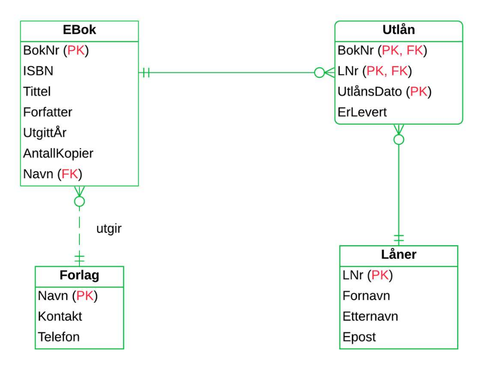
Kravanalyse
- Kravanalyse systematiserer hvilke data som er hensiktsmessig og nødvendig å lagre i en database
- Faktainnsamling er en liste med krav til et system
Entiteter og attributter
- Entitet er et objekt vi ønsker å lagre informasjon om(tabell)
- Attributter er egenskapene tildelt entitene(kolonner)
- Domene er datatypen tildelt domenet, som feks VARCHAR
- Entitetstyper representerer samlinger av forekomster, ergo en "entry" i en rad
Forhold
Kardinalitet
En-til-en
En-til-mange
Mange-til-mange
Maksimums- og minimumskardinalitet
- Utrykker hvor mange forekomster av entitet A som kan eller må knyttes til B og omvendt
- Merk at relasjonen her har en hvit '<>', som tilsvarer kråkefot med hvit sirkel
Roller og navn på forhold
-
Navn spesifiserer forhold for å klargjøre lettere hva forholdet betyr
-
Kan leses som verb: "En ansatt leder en avdeling"
-
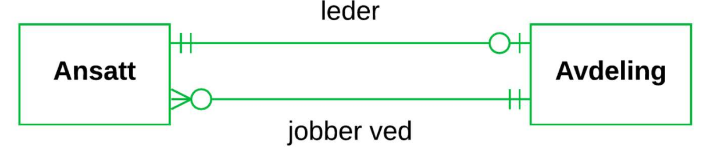
-
Roller er alternativ navngivning som faller litt mer naturlig
-
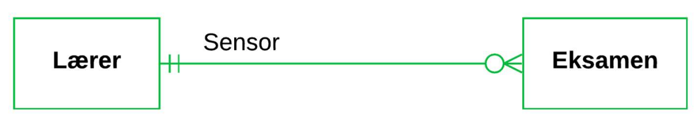
Primærnøkler og ikke-identifiserende forhold
-
Alle entiteter skal ha en identifikator(primærnøkkel)
-
Entiteter kan identifisere seg ved hjelp av andre entiteter
-
Kunde og ordre er et ikke-identifiserbart forhold siden de har begge sine egne identifikatorer
-
De blir ikke identifisert av hverandre
-
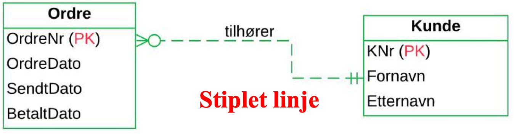
Svake entiteter og identifiserende forhold
-
Svake entiteter er avhengige av andre entiteter for å eksistere
-
Identifikatoren til en svak entitet er delvis eller helt arvet fra en annen identitet
-
Svake identiteter kan arve attributtre fra andre svake identiteter
-
Forholdet mot svake enheter er identifiserende
-
Forsvinner entiteten som har forhold mot den svake identiteten, vil den svake forsvinne
-
Identifikatorene går i arv
-
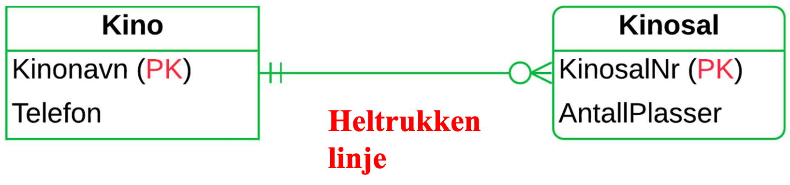
-
Identifikator sammensatt av kolonner fra flere entiteter(tabeller)
-
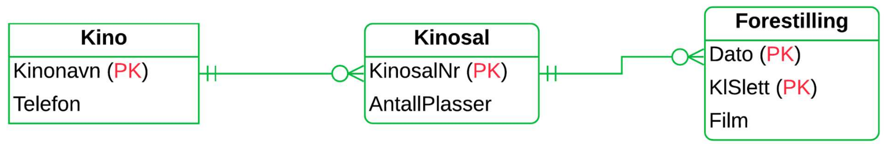
-
Kan også bruke løpenummer som identifikator
-
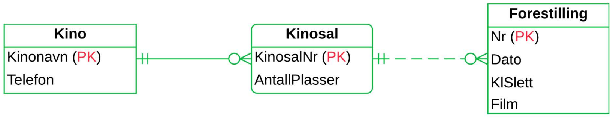
Attributter til forhold og koblingsentiteter
-
Utvide modellen med mer spesifikk informasjon som ikke er funnet i noen av identitetene
-
Entitisering: Erstatter en-til-mange forhold med forhold til begge entitetene
-
Ny enhet kalles assosiativ enhet eller koblingsenhet
-
Før:
-
Etter:
Datamodellering med UML
- Unified modeling language
- 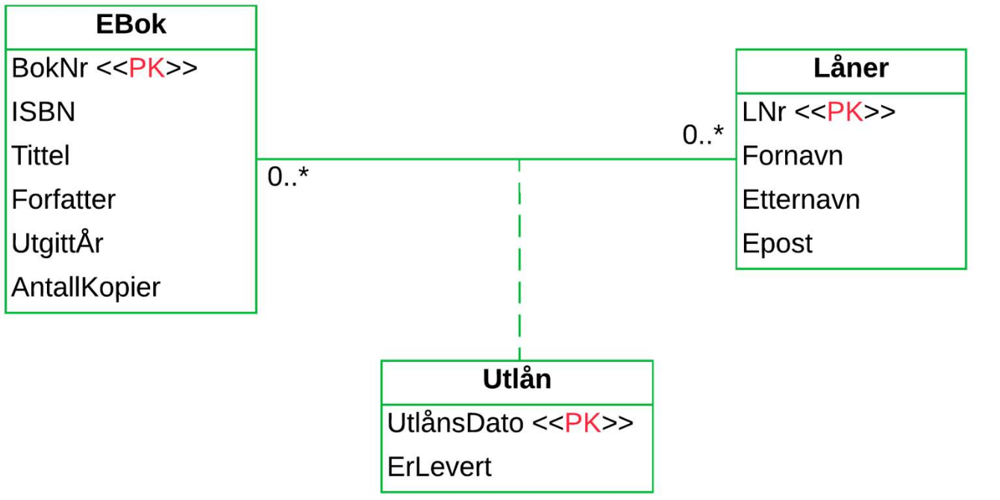
- 0..
- Utlån er en assosiativ entitet, se striplet linje
- Entiteten blir identifisert med en dato, en e-bok og en låner
Aggregering
Komposisjon
- Sterkere form for aggregering
- Livsløpet til to entiteter sammenfaller, forsvinner den ene, mister den andre identiteten sin
Subtyper
- "Delmengder"
- Spesialisering av en annen entitet
- Subtyper arver egenskaper til supertypen og kan ha ekstra attributter
- "er en"
- 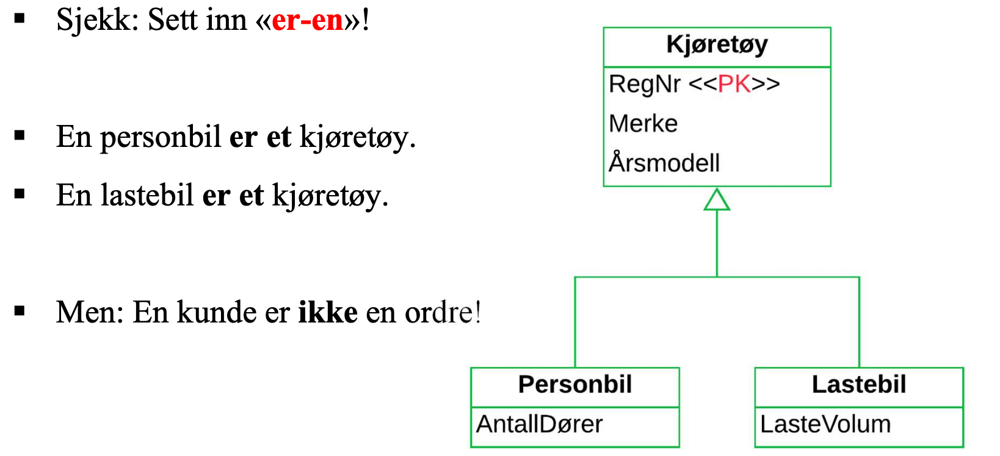
Abstraksjonsmekanismer
Chen-notasjon
- Annen dialekt av ER
- Forhold tegnes som romber
- Kardinalitet blir angitt med "1" og "N"
- 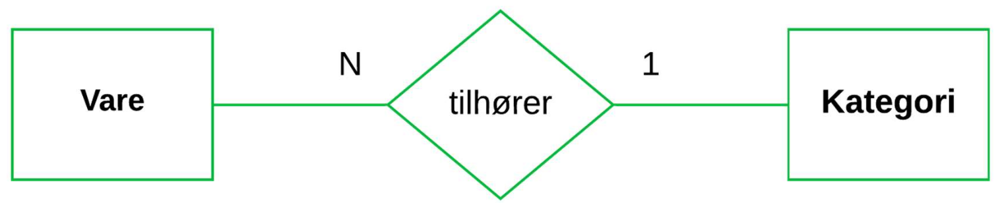
Forhold i Chen-notasjon
- Attributter tegnes i ovaler utenfor entiteter
- 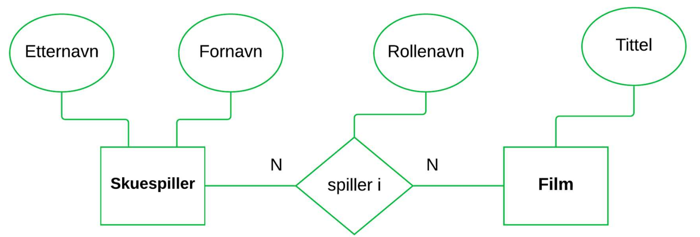
Svake entiteter i Chen
- Doble linjer er svake entiteter
- 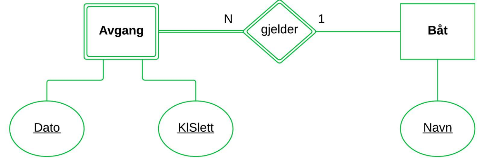
Ikke atomære attributter i Chen
- Sammensatte attributter: En attributt kan være en kombinasjon av flere andre attributter
- Avledede attributter: En attributt kan beregnes fra en annen
- Flerverdiattributter: En attributt kan være sammensatt av flere verdier
- 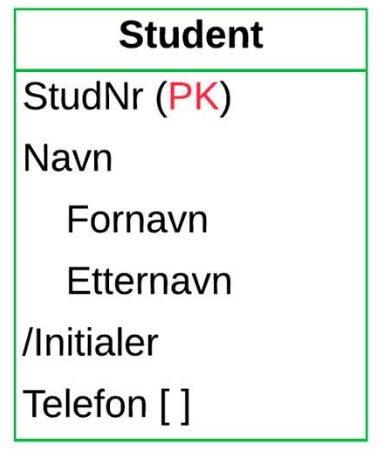
Kapittel 8 - Fra modell til database
Oppsummeringer av enkle regler
- Entiteter blir til tabeller
- Atributter blir til kolonner
- Identifikatorer blir til primærnøkler
- Mange-til-mange forhold blir til "koblingstabeller". Identifikatorene for de involverte entitene blir til en sammensatt primærnøkkel
En-til-mange forhold
- Identifikatoren på én-side blir kopiert til tabellen på mange-siden, og det blir en fremmednøkkel mot én-siden
- Primærnøkkelen blir kopiert til mange-siden, men ikke omvendt
- Ikke et krav at fremmednøkkelen heter det samme
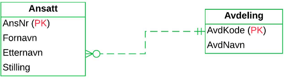
- Ved en avdeling jobber det mange ansatte
- En bestemt ansatt er tilsatt på kun en avdeling
- Ansatt er på mange siden av forholdet og avdeling er på en-siden av forholdet
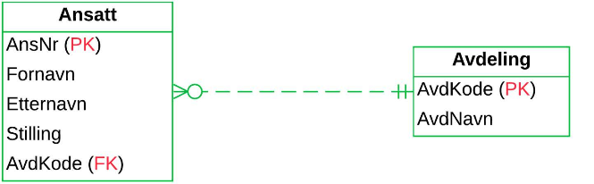
- Her er fremmednøkler på en siden
Oversettelse av svake entiteter og identifierserende forhold
- I et identifieserende en-til-mange forhold, vil den svake identiteten alltid være på mange siden
- I et identifiserende en-til-en forhold med en svak identitet, vil den svake identiteten også motta fremmednøkkel fra en den andre identiteten
Mange-til-mange forhold
En-til-en forhold
- Kan håndteres på flere måter:
-
Idenfikatoren i A blir kopiert til B og blir fremmednøkkel mot A
-
Idenfikatoren i B blir kopiert til A og blir fremmednøkkel mot B
-
Fremmednøkler kopieres begge veier
-
Oppretter en koblingstabell
-
Slå sammen felles identiteter til en felles tabell
-
Alternativt:
- Ansatt(AnsNr, Fornavn, Etternavn, Stilling)
- Avdeling(AvdKode, AvdNavn, AnsNr*)
-
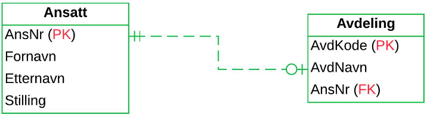
Håndtere minimumskardinalitet i databaser
- Dersom det er en-til-en og begge fremmednøklene er satt som NOT NULL vil det kunne oppstå problemer ved å registrer data
- Løsning: Gjøre innsetningene en del av transaksjonen og merke nøklene DEFERRABLE
ALTER TABLE Hovedstad
ADD CONSTRAINT HovedstadLandFK
FOREIGN KEY(LandKode)
REFERENCES Land(LandKode)
INITIALLY DEFERRED DEFERRABLE;
- For å slette tabeller lenket sammen slik må fremmednøklene slettes først
ALTER TABLE Hovedstad
DROP CONSTRAINT HovedstadLandFK;
TODO Subtyper
TODO Ikke-atmoære attributter
Normalisering
Reduans og funksjonelle avnhengiheter
- Redudans
- Overflødig eller unødvendig informasjon
| AnsNr |
Fornavn |
Etternavn |
PostNr |
Poststed |
| 2 |
Gunnlaug |
Angeltveit |
3800 |
Bø i Telemark |
| 6 |
Vilde |
Aksnes |
3800 |
Gvarv |
| 7 |
Henriette |
Brobakken |
3800 |
Bø i Telemark |
| 9 |
Ragnvald |
Allum |
3812 |
Akkerhaugen |
| 11 |
Oliver |
Abrahamse |
3812 |
Akkerhaugen |
- Poststed og PostNr er funksjonelt avhengige siden de bestemmer hverandre
- Det er redundant å ha med begge kolonnene
Dekomponere tabeller
- Fjerning av redundans ved å dele opp i flere tabeller
- Overgangen til en ny tabell kalles et normaliseringssteg
- Normalisering er å gjenta dette til alle tabeller er helt fri fra redundans
- En oppdeling av en tabell $T$ til to tabeller $T1$ og $T2$ er en tapsfri dekomposisjon hvis $T1$ og $T2$ gir $T$ tilbake
1NF
- NF er definisjonen av et antall normalformer
- 1NF er på første normalform
- Første normalform er en tabell som bare inneholder atomære verdier
- For å gjøre om på tabeller som ikke er på 1NF:
- Flytte verdiliste over til en hjelpetabell med sammensatt primærnøkkel
2NF
-
Gitt en tabell T(A,B,C,D)
- B $\rightarrow$ D er en partiell avhengighet hvis:
- B er en ekte delmengde av en (sammensatt) primærnøkkel i T
- D er ikke med i primærnøkkelen i T
-
En tabell er på 2NF hvis den er på 1NF og den ikke inneholder partielle avhengigheter
-
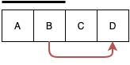
- Linjen over A+B viser at det er funksjonelle avhengigheter fra A+B til andre kolonner
- Den røde linjen viser et brudd på 2NF
-
Eksempel:
- Odrelinje(OrdreNr, VNr, Dato, Betegnelse)
- Ordrelinje inneholder VNr $\rightarrow$ Betegnelse, der VNr er en ekte delmengde av primærnøkkelen OrdreNr+VNr
- Dette er et brudd på 2NF og gjøre tabellen til 1NF
- Løsning:
- Ordrelinje(OrdreNr, VNr*, Dato)
- Vare(VNr, Betegnelse)
3NF
-
Gitt en tabell T(A,B,C,D)
- A $\rightarrow$ C er en transitiv avhengighet hvis:
- A er en primærnøkkel for T
- Verken B eller C er med i primærnøkkelen i T og B $\rightarrow$ C
-
En tabell er tredje normalform(3NF) hvis den er på 2NF og ikke inneholder noen transitive avhengigheter
-
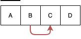
-
Eksempel:
- Ansatt(AnsNr, Fornavn, Etternavn, PostNr, Poststed)
- PostNr $\rightarrow$ Poststed er en transitiv avhengighet og bryter derfor med 3NF
-
Determinant
- En kolonne som bestemmer en annen
- A $\rightarrow$ B
-
Supernøkkel
- En kolonne som bestemmer enhver annen kolonne
- En kandidatnøkkel er en minimal supernøkkel
-
En tabell er på Boyce-Codd form hvis enhver determinant er en supernøkkel
-
Enhver minimal determinant er en kandidatnøkkel
-
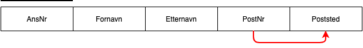
* AnsNr er kandidatnøkkel
* Det er en funksjonell avhengighet fra AnsNr til alle andre kolonner
* PostNr $\rightarrow$ Poststed bryter med **BCNF**
* PostNr er determinant over Poststed, men ingen andre kolonner
-
En tabell som ikke er på BCNF bør deles opp
-
Hvis en tabell tilfredstiller BCNF er den ferdig normalisert
-
Fra ukesoppgaver:
-
Passing (RegistrationNr, Manufacturer, PersonNr, Name, StationNr, Municipality,Date, Time)
- $\downarrow$
- Passing(#RegistrationNr, #Name*, #Date, #Time)
- Cars(#RegistrationNr, Manufacturer PersonNr*)
- Person(#PersonNr, Name)
- Toll(#StationNr, Municipality)
-
MultipeChoice (TestNr, TestName, QuestionNr, QuestionText, AlternateNr, Al-ternateText, User, Reply, Correct)
- $\downarrow$
- Test(#TestNr, TestName)
- Question(#TestNr*, #QuestionNr, QuestionText, Correct)
- Alternative(#TestNr*, #QuestionNr, #AlternateNr, AlternateText)
- User(#TestNr*, #QuestionNr*, User, Reply)
-
T(A,B,C,D,E) where A $\rightarrow$ B, C $\rightarrow$ D and C $\rightarrow$ E
- A og C er her kandidatnøkler siden de bestemmer alle de andre kolonnene:
- T1a(A, B)
- T1b(A, C)
- T2(C, D, E)
-
T(A,B,C,D) where A → B, B → C and C → D
- T1(A, B, C)
- T2(C, D)
- $\downarrow$
- T1a(A, B)
- T1b(B, C)
- T2(C, D)
-
T(A,B,C,D,E) where A + B → C, B → A, B → D and D → E
Kapittel 9 - Filer og indekser
Lagringsmedier
-
Flyktig(volatile) minne - Ustabilt minne som går tapt når maskinen skrus av
-
Ikke-flyktig minne - Beholder data etter strømforsyning er koblet av
-
Hurtigminne(flyktig) i en maskin er bygd opp av ulike typer ram:
-
Harddisk
- Sirkulære, roterende magnetplater
- Hver plate er delt inn i spor
- Spor i en gitt posisjon danner en sylinder
- Hvert spor er delt inn i sektorer
- En blokk er en sammensetning av ulike sektorer
- Lesing og skriving skjer med lese/skrive armer
- Når en arm er posisjonert over et bestemt spor, vil de dekke en sylinder
- Platene roterer med en konstant hastighet
- Akkesstiden får vi ved å addere tiden for flytting av lesearmene med rotasjonstiden og overføringstiden
- Gjennomsnittstiden for å få tak i en bestemt blokk
- En disk blir overtid fragmentert
-
SSD
- Elektronisk lagringsmedia
- Flash-teknologi av typen NAND
- Organisert i blokker som er delt opp i sider
- Kan kun slette hele blokker
- Konstant aksesstid
- Spiller ingen roller hvor noe er lagret på disken
- Ytelse måles i IOS(input/output operations per second)
-
Direkteaksess - Data kan bli lest i en vilkårlig rekkefølge
-
Sekvensielle lagringsmedium:
- Må leses fra start til slutt
- Magnetbånd
-
Tre bruksområder:
- Primærminne
- Data som blir lest inn fra minne for å utføre beregninger
- Oppdatert data blir skrevet ut igjen til disk
- Registering av hvilke data som befinner seg hvor og på hvilken tid
- Sekundærminne
- Permanent lagring på disk
- Tertiærminne
- Disker og optiske medier
- Benyttes for sikkerhetskopiering
Minnehierarkiet
- Sortert fra hurtig og dyrt, til langsomt og billig:
- Cache(ustabilt)
- RAM(ustabilt)
- SSD(stabilt)
- Harddisk(stabilt)
- Optiske medier(stabtilt)
- Magnetbånd(stabilt)
Overføring mellom minne og disk
- Dram er 1000 ganger raskere enn ssd og 100 000 ganger raskere enn harddisker ved direkteoppslag
- Et DBHS vil prøve å redusere antall lese/skrive operasjoner mot disken
RAID
Filstruktur og søkemetoder
- En database blir lagret på en fil
- En fil består av et antall poster
- Poster er organisert i en bestemt rekkefølge. Kan derfor snakke om poster i bestemte posisjoner
- Hver post består av et antall felt
-
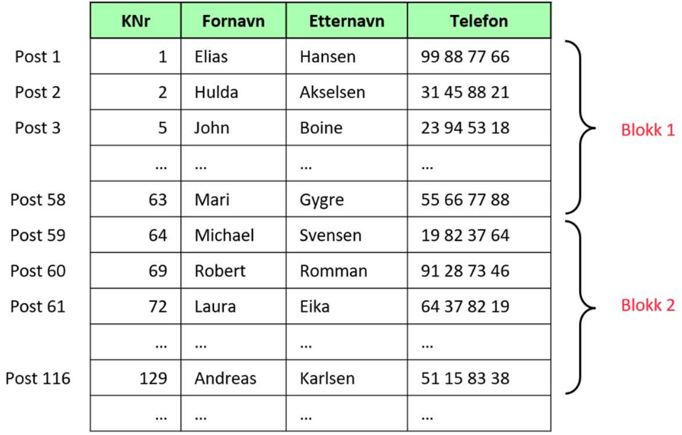
Representasjon av poster
- Vi velger datatyper for hver kolonner
- Ettersom forskjellige datatyper har forskjellige størrelser, vil ikke all verdier fylle opp all avsatt plass
- Derfor skape blanke tegn for å fylle opp resten av plassen siden kolonnene har fast lengde
- CHAR og VARCHAR har variabel lengde - Verdier vil kun bruke så mye plass som er faktisk nødvendig
Ikke sorterte filer
- Poster blir organisert i rekkefølgen de blir registrert
- Heap filer
- Effektivt å sett inn nye poster
- Langsomt å søke siden det må sekvensielt søkes
- I verste fall må alle blokker søkes gjennom
Sorterte filer
- Poster ordnes med hensyn på en kolonne, feks primærnøkkel til tabellen
- Sortert fil(sekvensiell fil)
- Gjør det mulig å bruke effektive søketeknikker
- Binærsøk
- Starter i midten av filen og sammenlikner posisjonen med det vi søker etter
- Deretter går til den delen av filen som inneholder tallet vi er ute etter
- Forsetter slik helt til tallet er funnet
- Binærsøk er mye raskere enn sekvensielt søk
- Sekvensieltsøk = $n/2$, binærsøk = $log_2 n$
- Dersom poster er lagret sortert, oppstår det et problem dersom det skal sette inn data i flere av blokkene siden all dataen må effektivt sett bli flyttet for å gjøre plass til de nye postene
- Løsningen er å sette de nye postene i overflytblokker og få postene før til å peke på dem, og deretter de nye postene til å peke på hva neste post er
- Etterhvert blir det lange kjeder av pekere, pekerkjeder, som blir lite effektive og filen burde derfor etterhvert omorganiseres
Hashing
- Blokkadresser blir regnet ut basert på feltene i filen(hash-nøkkelen)
- Effektiviserer søk
Indekser
- Indekser består av søkenøkler og pekere
- Søkenøkler er verdier fra kolonner
- Pekere er adresser til blokker eller poster
- Tenk stikkordsregister:
- Søkenøkler er ord som forekommer i boken
- Pekerene er sidetall
- Indekser effektiviserer søk
- Bruker mer lagringsplass
-
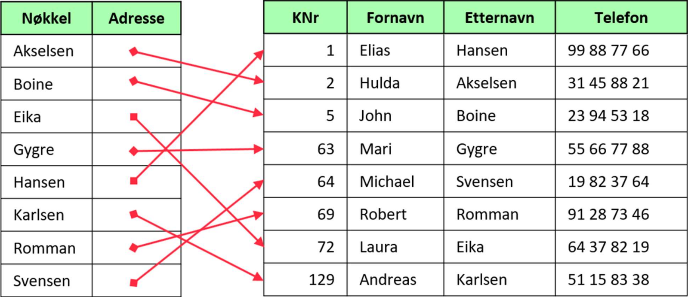
Primærindekser
- En indeks der søkenøkkelen samsvarer med det feltet som datafilen er fysisk ordnet med hensyn på
- Ikke nødvendigvis basert på primærnøkkel til tilhørende tabell eller lagre pekere til alle verdiene i filen
Sekundærindekser
- Indekser som ikke er primærindekser
- Hjelper med å søke raskere
- Tette indekser
- Peker til samtlige poster
- Ikke-tette indekser
Flernivåindekser
-
Indeks på indekser
-
Når indekser blir for store, ofte tette
-
Ved 3 nivåer blir indekser på nivå 3 brukt til å søke på 2, og det som er igjen brukte til å søke på 1
-
Indekser på nivå 1 inneholder pekere ut til blokker eller poster i selve datafilen
-
Bortsett fra på nivå 1 kan man alltid bruke ikke-tette indekser fordi indekser(på lavere nivåer) er sortert
-
Eksempel:
- En fil med 100 000 poster lagret i 2500 blokker(40 poster i hver blokk)
- Idenksen på nivå 1 er tett, og inneholder 100 000 poster
- Vi kan lagre 100 indeksposter per blokk
- Indeksen får da plass i 1000 blokker
- Indeksen på nivå 2 inneholder en post for hver blokk i den første indeksen(1000) og får derfor plass i 10 poster(en blokk)
- Indeks på nivå 3 har 10 poster(en blokk)
- Vi klarer derfor med 4 diskaksesser å finne en bestemt post
- Med en sekvensielt søk ville det tatt 1250 aksesser i snitt
-
Balansert flernivåindeks - Alle veier i datafilen er like lange, alle søk tar like lang tid
-
B+ trær:
- Balansert flernivåindeks
- Består av noder i trestruktur
- Øverste noden er root
- Hver node inneholder maksimalt n søkeverider og n+1 pekere
-
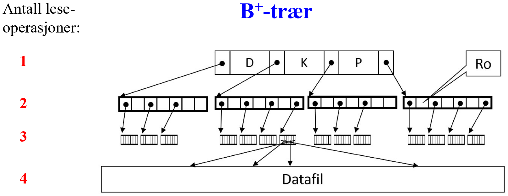
- Ved innsetting av nye poster i filen kan det bli nødvendig å splitte noder i søketreet, som kan forplante seg oppover slik at et nytt nivå må legges til
Bitmap-indekser
- Bedre en B+ til å indeksere kolonner med få forskjellige verdier
- Bitmap-indekser lagrer et bit-mønster som beskriver forekomster av hver enkelt verdi
- Har like mange rader som tabellen den indekserer
- Har like mange kolonner som det er forskjellige verider i tabellkolonnen den er definert for
- Effektiv ved utførelse av spørringer med sammensatte betingelser på indekserte kolonner
Indekser med SQL
Retningslinjer for fysisk design
Valg av datatyper
- Tekst
- VARCHAR for varibel lengde og CHAR(x=antall tegn) for fast lengde
- Navn, kundenummer, fødselsnummer, telefonnummer og generelt alle andre kolonner med tall der vi ikke trenger å regne på tallene bør lagres som tekst
̉̉̉
- Tall
- INTEGER OG SMALLINT for å lagre heltall
- INTEGER kan lagre større tall, men bruker mer lagringsplass
- Dersom vi vet at verdiene får plass i SMALLINT, burde det benyttes
- DECIMAL kan lagre komma tall og spesifisere størrelse med DECIMAL(x=antall siffer, y=antall desimaler)
Valg av filstruktur og indekser
- Ikke-sorterte filer kombinert med B+ trær er hensiktsmessig
- Hashing er effektivt ved søk etter konkrete verdier, men ikke intervall søk
- For boolske kolonner er det ingen vits med å opprette en indeks baster på B+ trær, bitmap-indekser er bedre
- To tabeller i et en-til-mange forhold man med fordel flettes på ytre lager, kalt klyngedanning(clustering)
- Indekser tar opp lagringsplass og krever vedlikehold ved oppdatering av tabeller
- Ikke lov å opprette indekser på kolonner som inneholder video, bilde eller annen media
Kapittel 10 - Transaksjoner
- To utforinger for et DBHS for å sikre transaksjoner:
- Feilsituasjoner
- Systemet må loggføre transaksjoner i tilfelle en transaksjon blir brutt
- Samtidige brukere
- Passe på at ikke to brukere av systemet endrer på samme data
Håndtering av feilsituasjoner
Definisjoner av transkasjoner
-
COMMIT(bekreft) og ROLLBACK(angre)
-
Effekten av transaksjon er ikke effekten endelig før COMMIT blir utført
-
ROLLBACK gjør at transaksjonen ikke får noen effekt på databasen
-
START TRANSACTION i MySQL starter transaksjoner
- START TRANSACTION;
- INSERT ...;
- INSERT ...;
- INSERT ...;
- UPDATE ...;
- UPDATE ...;
- COMMIT;
-
Kommunikasjonen mellom DBHS og bruker kan være satt opp på 2 måter:
- Auto-commit - Hver transaksjon blir betraktet som en transaksjon
- Alle kommandoer fram til commit ELLER rollback tilhører samme transaksjon
- Gjør det også mulig å definere sammensatt transaksjoner uten noen spesifikk startkommando
Kontrollerte avbrudd og feilsituasjoner
- To typer feil: diskkrasj og strømbrudd, også kjent som medifeil og instansfeil
Transaksjonsloggen
- DHBS må til enhver tid holde styr på hvilke transaksjoner som er igangsatt, men ikke fullført
- "Hvordan ksn vi vite hvor langt den avbrutte transksjonen kom før den ble avbrutt?"
- Løsning: Loggføring
- Loggføre alle databseoperasjoner før databasen blir oppdatert
- En transaksjonslogg er en fil som inneholder data om alle operasjoner som er utført mot databasen
- DBHS registrerer når transaksjoner starter, når dataelementer blir oppdatert og når COMMIT eller ROLLBACK blir utført
- Transaksjoner i loggen blir tidelt hvert sitt nummer
- Tilstander i loggen:
-
Aktiv
-
Fullført
-
Bekreftet
-
Avbrutt
-
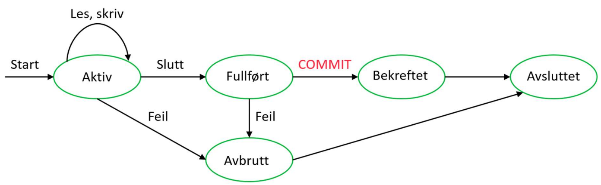
Gjennoppbygging med transaksjonslogg
-
Etter mediefeil må databasen bygges opp igjen med sikkerhetskopier
-
Det er 2 måter å bruke transaksjonsloggen til gjenoppbygging:
- UNDO
- Leser loggen baklengs og erstatter nye verdier med gamle
- REDO
- Leser loggen forlengs og gjennomfører avbrutte transaksjoner
-
Noen DBHS bruker ummiddelbar oppdatering som oppdaterer underveis i transaksjoner
-
Utsatt oppdatering gjør at oppdateringer blir utsatt til alle operasjoner er registert i loggen
-
Hvordan et database gjennomfører ROLLBACK:
-
Eksempel:
-

-
T1 og T2 har skrevet COMMIT til loggen og ble bekreftet før feilen skjedde
-
T3 og T4 var under utførrelse under feilen
-
Ved umiddelbar oppdatering må effekten av T3 trekkes tilbake i tilfelle den hadde rukket å utføre noen skrive operasjoner
-
Ved utsatt oppdatering ville ikke dette vært nødvendig
-
T3 og T4 må så startes på nytt
-
Databasen kan ikke vite om T1 og T2 har oppdatert databasen, og må kjøre disse på nytt basert på registreringen i loggen(REDO)
-
For at databasen ikke må gjøre alle transaksjoner noen gang utført, blir det skrevet sjekkpunkter til loggen
Flerbruksdatabaser
Prosesser
-
Utførelse av et program
-
Datamaskiner håndterer flere prosesser ved hjelp av tidsdeling
- Maskinen bruker litt tid per prosess
- Veksler mellom prosesser
-
Flerbruksdatabaser - En database der flere brukere er koblet på samtidig
-
Transaksjoner er databaseinterne prosesser
ACID-egenskapene
- En transaksjon mot en database bør ha følgende egenskaper:
- Alt eller ingenting(Atomicity)
- Enten blir transaksjonen utført i sin helhet, eller ikke i det hele tat
- Kosistens(Consistency)
- Hvis databasen er i en konsistent tilstand før transaksjonen blir utført, skal databasen også være konsistent når transaksjonen er ferdig utført
- Ingen innblanding(Isolation)
- Ingen transaksjoner som foregår samtidig skal interferere med hverandre
- Varighet(Durability)
- Når en transaksjon er bekreftet, skal effekten av transaksjonen bli permanent lagret. Dette skal gjelde selv om det oppstår feil på et senere tidspunkt
Les - beregn - skriv
Utfordringer med samtidige brukere
Låsemekanismer
Serialiserende forløp
- Transaksjoner kan være satt sammen av mange enklere operasjoner
- Problemer kan oppstå når flere transaksjoner opererer på flere fellesområder i forskjellige rekkefølger
- Deloperasjonene må utføres i en bestemt rekkefølge kalt forløp(schedule)
- Sekvensielt forløp
- Utføre deloperasjoner en etter en
- Korrekte, men ineffektive
- Serialiserbart forløp
- Så mye samtidig, som mulig
- Forløp som om de deloperasjonene skulle bli utført sekvensielt
Tofaselåsing
- Transaksjoner ber om samtidlige låser i starten av sitt forløp, og opphever samtlige låser til slutt
- En transaksjon får ikke lov til å sette nye låser etter at den nye låsen er opphevet
- To faser:
- Voksefase
- Ny låser blir satt
- Når den første låsen blir opphevet, går transaksjonen til minkefasen
- Ikke lov å sette nye låser
- Kan utføre beregninger til enhver tid
- Hvis samtlige trnsaksjoner følger tofaselåsing, får vi serieliserbare forløp
- Minkefase
Vranglås(Deadlock)
-
To transaksjoner som gjensidig venter på at den andre skal oppheve sin lås
-
The dining philosophers
- Filosofene tenker og spiser
- Midt på bordet står mat
- Mellom hver filosof ligger en gaffel som filosofene deler med naboen til venstre og høyre for seg
- Filosofene trenger begge gaflene til å spise
- Vranglås oppstår hvis alle fire bestemmer å spise samtidig
- Ingen kommer videre før minst en avbryter
- Filosofene er transaksjoner og maten er dataen
- Tenkefasen er når transaksjonen utfører beregninger
- Spisefasen er når den jobber med data
- To filosofer som deler en gaffel er det samme som to transaksjoner som jobber med samme dataelement
-
DBHS bruker to strategier for å løse vranglåsproblemet:
- Forhindre at vranglås oppstår
- Oppdage og løse opp vranglås
-
Tidsstempler kan forhindre vranglås
-
Tidsstempelet blir lagret sammen med låsen når transaksjonen får invilget lås på et dataelement
-
DBHS kan også løse opp vranglåser etter de har oppstått med en ventegraf
- Består av noder og kanter
- DBHS oppdaterer ventegrafen med en kant fra noden merket til transaksjonen som venter til noden merket av transaksjonen som har låst dataelementet
- DBHS vet når en vranglås oppstår siden grafen inneholder en sykel(T1,T4,T2,T1)
- DBHS må så velge å avbryte en transaksjon for så å starte den opp igjen senere
- Utvelgensel av transaksjoner må skje rettferdig
Isolasjonsnivåer og optimistisk låsing
-
Man godter en viss innblanding i serialiserende transaksjoner for effektivitetshensyn
-
Usikker lesing er at en transaksjon kan lese data skervet av en annen transaksjon før sistnevnte har bekreftet med COMMIT
-
Ikke-repeterbar lesing(non repeatable read) betyr at den transaksjon kan få to forskjellige svar på samme spørring fordi en annen trnasaksjon har endret databasen og bekreftet med COMMIT
-
Fantomer(Phantoms) er rader satt inn av en transaksjon som en annen transaksjon oppdater når den første transaksjonen bekrefter med COMMIT
-
SQL definerer 4 isolasjonsnivåer
-
| Isolasjonsnovå | Fantomer | Ikke-repeterbar lesing | Usikker lesing |
| --- | --- | --- | ---|
| SERIALIZABLE | Nei | Nei | Nei |
| REPEATABLE READ|Ja|Nei|Nei
| READ COMMITTED|Ja|Nei|Nei
| READ UNCOMMITTED|Ja|Ja|Ja
-
Sette isolasjonsnivå i SQL
-
Interaktive applikasjoner der brukeren fyller ut skjermaer, kan føre til lange transaksjoner
-
Hvis mange brukere jobber interaktivt, kan det være med fordel å erstatte tradisjonelle låsemekanismer med optimistisk låsing
- En transaksjon får alltid lov å begynne å arbeide på en rad
- Kontrollen med konflikter gjøres når oppdaterte data skal lagres i databasen
- Kan implementeres med tidsstempler
Kapittel 11 - Databaseadministrasjon
Oppbygningen av et databasesystem
Oppgavene til et DBHS
-
En sluttbruker kommuniserer med databasesystemet med en brukerapplikasjon, med menyer, skjermbilder og rapporter. Applikasjonen kommuniserer med databasesystemet ved hjelp av SQL
-
Utvikler er en samlebetegnelse på systemutviklere, databasedesignere og programmerere
-
Utviklingsverktøy inneholder mkeanismer for datamodellering og implementasjon av databaser og applikasjoner
-
Databaseadministratoren(DBA) har ansvar for dagling drift av databasesystemet
-
Felles for gruppene er at brukerverktøyene og databasesystemet kommuniserer ved hjelp av SQL. Ingen manipulerer direkte
-
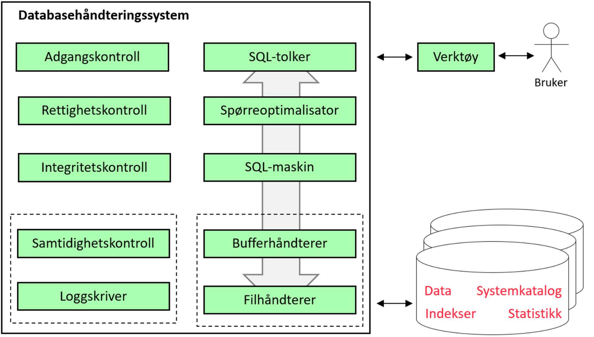
- Brukeren skriver inn en SQL-setning til SQL-Tolkeren, som sjekker om syntaksen er korrekt og evt gir feilmeldinger, parsering
- Oppbygningen av databasen er lagret i sytemkatalogen
- SQL-tolkeren leser fra systemkatalogen for å sjekke at tabeller og kolonner referert i spørringen eksisterer
- Korrekte spørringen blir sendt til spørreoptimalisering for å finne en mest mulig effektiv strategi for utførrelse
- Den optimaliserte spørringen blir overført til SQL-maskinen(delprogram i DBHS) for utførrelse
- Filhåndtereren sørger for lesing fra og skriving til filer
- Bufferhåndtereren har som oppgave å vite hvilke blokker som til en hver tid er i minne. Hvis en blokke allerede er i minne, vil det spare tid å bruke den direkte istedenfor å lade den fra disk. Har også som oppgave å velge hvilke blokker som skal leses inn og skrives ut på hvilke tidspunkter
- Adganskontroll har som oppgave å kontrollere brukernavn og passord ved pålogging siden ikke alle brukere har like rettigheter mot databasen
- Rettighetskontroll har som oppgave å sjekke at brukerne kun får utføre operasjoner i henhold til rettighetene de er tildelt
- Integritetskontroll sjekker at alle definerte forretningsrelger blir overholdt(valideringsregler, entitesintegritet, referanseintegritet,...)
- Loggskriveren logger og skriver til disk i tilfelle noe skulle gå galt
Oppgavene til databaseadministratoren
- DBA har overordnet ansvar for instalasjon og drift av datasystemer
- Strategiske delen av jobben kan være en egen stilling, dataadministrator(DA)
- Arbeidsoppgaver for DBA:
- Valg, installasjon og oppgradering DBHS
- Fysisk databasedesign
- Kapasitetsplanlegging og optimalisering
- Sikkerhetskopiering og gjenoppbygging etter feil
- Brukeradministrasjon
- Overvåking
SIkkerhetskopiering og gjenoppbygging
- Måter å sikkerhetskopierer på:
- Fullstending/inkrementell
- Fullstendig blir hele databasen sikkerhetskopiert
- Inkrementell blir bare det som er endret siden forrige gang kopiert
- Kan kombinere begge to
- Varm/kald
- Kald: Alle brukere må logge seg av og databasen tas ned før sikkerhetskopiering starter
- Varm: Sikkerhetskopiering mens databasen er i bruk
- Fysisk/logisk
- Fysisk: Databasetabeller blir lagret på filer
- Logisk: Sikkerhetskopiering i form av SQL spørringer(CREATE TABLE og INSERT)
- Mange virksomheter har krav til oppetid
- Sikkerhetskopiering og replikering er ikke det samme
Brukeradministrasjon
-
Innebærer å opprette brukerkontoer med brukerenavn og passord, og tildele brukere rettigheter i databasen
-
Definere forhold mellom brukerrettigheter og databaseobjekter
-
Rettigjeter er grunnleggende operasjoner på databaseobjekter
-
CREATE USER ola IDENTIFIED BY hemmelig
-
Kan tildele rettigheter med GRANT
-
Hvis man vil at en bruker skal kunne gi priviligegier videre, legger man til WITH GRANT OPTION
-
Kan trekke tilbake priviliegier med REVOKE
-
Forskjellige objektrettigheter til en tabell:
- SELECT
- UPDATE
- INSERT
- DELETE
- ALTER TABLE
-
I noen systemer kan man gi brukere systemrettigheter
- CREATE SESSION: Rett til å logge seg på
- CREATE ANY TABLE: Rett til å definere nye tabeller
- ALTER ANY TABLE: Rett til å endre definisjonen av alle tabeller
- INSERT ANY TABLE: Rett til å sette inn nye rader i alle tabeller
-
Gi bruker rettigheter til en kolonne
-
Opprette rettigheter på views:
-
Lage roller som kan gis til brukere:
-
To roller har behov for rettigheter:
Kapasitetsplanlegging og optimalisering
- DBA har ansvar for kapasitetsplanlegging
- Valg av maskinvare, nettverk, minne, diskplass osv..
- DBHS har som regel rapporteringsmuligheter som kan brukes til optimalisering av databasen
- Noen systemer har optimaliseringshint for SQL-spørringer for å gjøre de mer optimalisert
- Denormalisering - Slå sammen tabeller for å unngå likekoblinger
Databaseløsninger og systemarkitektur
Klient/tjener-arkitektur
-
System bestående av en tjener og flere klienter
-
Klienter sender forespørseler til tjeneren
-
Tjeneren utfører oppgavene og sender en respons tilbake
-
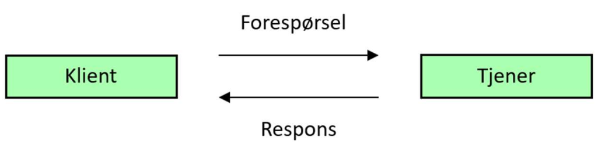
-
Datatjenere svarer SQL spørringer
- Kan være et SQL vindu eller en egen applikasjon
-
I sin enkleste form kalles klient/tjener-arkitektur for tolagsarkitektur
-
Dersom det er flere tjenere, f.eks en databasetjener, en applikasjonstjener og en klientmasking, får man en flerlagsarkitektur
Parallelle og distribuerte databaser
-
Parallellprosessering er å bryte ned en oppgave i deloppgaver og behandle disse oppgavene på flere prosessorer for bedre ytelse
-
Det finnes flere løsninger:
- Delt minne - Hver prosessor har sin egen disk
- Delt disk - Hver prosessor har sitt eget minne
- Ingen deling - Hver prosessor har eget minne og disk
-
Delt minne og Delt disk er tette koblinger
-
Ingen deling er en løs kobling
-
Prosessene må koordineres = mere komplekst
-
I databasesystemer kan parallellprosessering foregå ved å:
- Foredele ulike transaksjoner og ulike spørringer til ulike prosessorer(inter query)
- Bryte ned spørringen til flere deloppgaver og fordele til prosessorer(inter query)
-
I distrubuerte databasesystemer er databasen lagret på flere maskiner knyttet sammen i et nettverk, typisk et fjernnett(WAN)
-
DBHS i slike systemer heter distrubuert databaseahåndteringssystem(DDBHS)
-
Data kan fordeles hos nodene i et DDBS på flerer måter:
- Horisontal fragmentering - En tabell blir delt opp etter rader og de forskjellige radene lagres hos de forskjellige nodene
- Vertikal fragmentering - En tabell blir delt opp etter kolonner og fordelt hos nodene
- Kombinert fragmentering - En tabell blir delt opp etter både rader og kolonner
- Replikering - En tabell, eller deler av en tabell, blir lagret på flere noder(flere kopier)
-
Distrubuert gjennomsiktighet - Distrubuert databasesystem skal hos brukere oppfattes som et logisk databasesystem
-
Hvilke data som er lagret hos hvilken node er lagret hos systemkatalogen
-
Transaksjonshåndtering - Når data blir oppdatert hos en noder, må oppdateringen også skje hos de andre nodene
- Skal enten blir fullstendig gjennomført, eller ikke i det hele tatt
- En transaksjon skal bli gjennomført i sin helhet av alle noder, eller ikke i det hele tatt av noen noder
- Tofase-commit - Noden der transaksjonen blir initiert, inntar en koordinatorrolle
-
Spørreoptimalisering - Finne effektive måter å gjennomføre SQL spørringer på
Minnedatabaser
- En minnedatabase holder hele databasen i minne
- Hurtige
- Kan få sikker lagring med loggføring
- Caching - Kopier av visse data blir plassert på et raskt lagringsmedium
Databaser i skyen
-
IaaS
- Infrastructure as a service
- Gis tilgang på en eller flere maskiner
- Må selv installere OS og programvare
- Leverandøren gir hardware
-
SaaS
- Software as a service
- En måte å tilby programvare på
- Kjøper bare programvare ikke hardware
-
PaaS
- Platform as a service
- Får maskiner, OS og ferdig utviklingsmiljø
-
DBaas
Opprette og skalere skydatabaser
-
En DBaas-løsning er en ferdig installert DBHS der leverandøren sørger for oppgradering av både DBHS pg inderliggende OS
-
Det er enkelt å skalere skytjenester
-
Skalering kan gjøres horisontalt og vertikalt
- Horisontalt - Utvide med flere maskiner
- Vertikalt - Oppgradere eksisterende systemer
-
Sharding er en form for horisontal fragmentering som kan utnytte en løsning der en database er fordelt på flere maskiner
-
Skyløsninger gjør det enklere med replikering av databasen på flere maskiner, der en maskin tar over hvis en annen feiler(failover)
-
Geografisk replikering - Ha en oppdatert kopi av databasen på et datasenter i en annen geografisk region
-
Mikrotjenester - Deling av større applikasjoner fordelt fra mindre og selvstendige byggeklosser der en mikrotjeneste er en slik byggekloss
-
Container - Lettvektsutgave av en virtuell maskin som gjære det mulig å shippe en mikrotjeneste med alt den avhenger av
Sikkerhetskopiering til skyen
- Utfordinger til sikkerhetskopiering i skyen
- Skalering
- Skytjenester har bra skalering
- Infrastruktur
- Sikker transport og arkivering av fysiske lagringsmedier er krevende
- Skytjenester gjør at man slipper å håndtere dette selv
- Kimprimering og kryptering
- Det er viktig at dataen er sikker og er komprimert for hastighet
- Gjenoppbygging
- Raskere oppbyggning i sammenlikning med fysiske medier
- Volum
- Kan være vanskelig for store databaser å ta sikkerhetskopi innenfor tidsvinduet man har til rådighet
Spørreoptimalisering
Kapittel 12 - Webapplikasjoner
Webteknologi
HTML
-
HyperText Markup Language
-
Dokumentformat
-
HTML5 er siste versjon
-
Dokumenter består av elementer
-
Alle ord er omsluttet i tagger: <>
-
<!Doctype html>
<html>
<head>
<title>Mitt nettsted </title>
<meta charset="UTF-8">
</head>
<body>
<h1>Lær mer om internettet!</h1>
<p>
<a href="http://www.w3.org/"> Hjemmesiden til WC3
</a> inneholder mye informasjon om HTML. Her er en
<a href="intro.html">kort introduksjon til HTML </a>
<p>
</body>
</html>
- Hvert HTML-element kan ha et antall navngitte attributter som blir tildelt verdi
- Hyperlenker - Referanse til en annen side ved at attributtet href blir tilordnet en URL(Uniform resource locator)
- URL bygger på hierarkisk pådomenenavn
- Protokoll://domene/katalogsti/filnavn.html
HTTP
-
HypterText Transfer Protocol
-
Styrer kommunikasjonen mellom tjener og klient(typisk nettleser)
-
Bygger på TCP/IP
-
HTTP meldinger består av:
- Meldingshode
- Meldingskropp
- Forespørsel eller respons
-
POST www.hobbyhuset.no/vareliste.html HTTP/1.1
Accept: text/html
-
HTTP svarkoder
-
HTTP respons:
-
HTTP/1.1 200 OK
Content-type: text/html
<html>
...
</html>
Databaser og applikasjoner
- Et informasjonssystem består av komponenter for å samle inn, lagre, behandle, overføre, søke etter og presentere informasjon som blir brukt i en virksomhet
- Sluttbrukere trenger applikasjoner for å snakke med databasen siden de ikke kan SQL
- I databaseapplikasjoner blir SQL kombinert med andre språk for å lage applikasjoner
Fysisk og logisk arkitektur
-
Fysisk arkitektur - Hvordan et system er delt opp og fordelt på forskjellige maskiner og knyttet sammen i nettverk
-
Klient $\leftrightarrow$ [Applikasjon] $\leftrightarrows$ [Databasesystem]
- Appliksjonen spiller rollen som klient, og sender SQL-spørringer til databasetjeneren
- Tjenere utfører spørringene og sender spørreresultater tilbake
-
Webløsning:
- [Nettleser]$\leftrightarrows$ [Webtjener]$\leftrightarrows$ [Databasesystem]
- Nettleseren overfører inndate fra brukeren til webtjeneren
- Webtjeneren bygger opp en SQL-spørring som ednes til databasetjeneren
-
For nettsteder med stor trafikk kan det lønne seg med en applikasjonstjener
- [Nettleser] $\leftrightarrows$ [Webtjener] $\leftrightarrows$ [Applikasjonstjener] $\leftrightarrows$ [Databasesystem]
-
Webløsninger kan deles opp i lag for database, forretningslogikk og brukergrensesnitt
- En plattform er en kombinasjon av maskinvare og basis programvare
- Programmer som kan flyttes fra en plattform til en annen uten endring er plattformuavhengige
- En utviklingsstakk er en kombinasjon av slike programmer
-
| Eksempel på utviklinkgsstakk |
| PHP |
| APACHE |
| MySQL |
| Linux |
Introduksjon til PHP
Dynamiske nettsider
- PHP forespørsler blir sendt til en PHP-tolker
- Utdata er HTML som webtjener sender videre til nettleseren
- Tjenersideprosessering - Ser man på kildekoden for en PHP generert nettsiden, vil bare HTML kode komme opp
- print produserer HTML kode
- Dynamiske nettsider er generert av scripts
Behandle HTML-skjemaer
-
HTML-skjemaer brukes for å hente inndata fra brukeren
-
Definert med form-elementer
-
Form-elementer kan inneholde et antall GUI-komponenter
- F.eks tekstbokser, nedtrekkslister og kommandoknapper
-
HTML POST-skjema
-
HTML GET-skjema
-
Form rammer inn søkeskjemaet med tekstboksen der brukeren skriver inn varenavnet og kommandoknappene for å starte søket
-
Action-attributtet inneholder URL til PHP-scriptet som behandler søket
- vare=input fra brukeren
- PHP-scriptet utfører en SELECT mot databasen
Behandle skjemadata
Metode POST
- Kan overføre større datamengder enn ved GET
- $_POST er ogsp en assosiativ tabell (parameter => verdi)
- Skjermadata er ikke synlig i URLen
- Hindrer at andre får tak i sensitiv informasjon ved å se på skjermen
- Skjermadata er ikke kryptert
$_GET, $_POST og $_REQUEST
-
$_GET: Skjemadata overført med metode GET
-
$_POST: Skjermadata overført med metode POST
-
$_COOKIES: Informasjonskapsler
-
$_REQUEST: Summen av $_GET, $_POST OG $_COOKIES
Databasetabeller som assosiative tabeller
-
En database består av et antall rader:
-
Hver rad kan håndteres som en mapping fra kolonneneavn til verdi:
-
$dbtab = array(
array("nr" =>1m "navn" => "Per"), array(), ...
);
Databaseprogrammer i PHP
Programmering i PHP
Dagens dato
<html>
<body>
<?php
$dato = DATE("d.m.Y");
echo "<h1>Dagens dato: $dato</h1>";
?>
</body>
</html>
Variabler i PHP
-
Alle variabler starter med $
-
Punktum slår sammen tekstverdier
-
Variabler kan endre verdi
-
<html>
<body>
<?php
$navn = 'Ola';
echo '<h1>Hei ' . $navn . '</h1>';
$navn = 'Kari';
echo '<h1>Hei ' . $navn . '</h1>';
?>
</body> </html>
-
En tekst omsluttet av doble apostrofer kan inneholde variabler
-
Linjeskift gjøres med \n
Datatyper i PHP
- Trenger ikke å deklarere variabler i PHP
- Datatyper
- boolean, integer, float, string
- array, object ...
- PHP-tolkeren utleder datatypen fra sammenheng
Operatorer i PHP
-
Aritmetiske operatorer
-
Sammenligningsoperatorer
-
Inkrement og dekrement
-
Logiske operatorer
-
Spesielle operatorer
- . .= - Slå sammen tekst / legg til tekst
- += *=
Innebygde funksjoner i PHP
-
Tekst
- str_pad, strlen, substr, substr_replace, trim, ucfirst, ...
-
Dato og tid
- date, getdate, gettimeofdat, strtotime, ...
-
Matematikk
- abs, ceil, cos, exp, floor, log, ...
-
Eksempler:
-
$s = substr('abcdef', 1,3); // $ =='bcd*
-
$today = getdate();
-
$avst = sqrt(exp($x2.$x1,2) + exp($y2-$y1,2))
Konvertering i PHP
Presentasjon av tall i PHP
-
Parametre til funksjonen number_format
- Anrall desimaler
- Tegn for desimalpunktum
- Tusenskilletegn
-
$pris =123456.789
-
print(number_format($pris,2,' ',', ' ') )
Valgsetninger i PHP
While-løkker i PHP
Tabeller i PHP
-
Tabeller egnser seg for gjennomløp med for-løkker
-
$nedboer = array(3,0,0,23,0,17,4);
$antall = sixeof($nedboer):
for ($i=0; $i<$antall; $i++) {
$sum += $nedboer[$i]
}
$snitt = $sum / $antall;
print('Totalt: ' . $sum . ' snitt: ' . $snitt);
Gjennomløp med foreach
-
For å produsere punktliste
- Skrite ut < ul > helt først og < /ul> helt til slutt
- Så må vi omslutte hver verdi med < li> og < /li >
-
$tabell = array(3,0,0,23,0,17,4);
print '<ul>';
foreach ($tabell as $enVerdi) {
print '<li>' . $enverdi . '</li>';
}
print '</ul>';
Navneliste (løkke, gjentakelse)
-
Programmet skriver alle navn i en tabell(array)
-
$navnTabell =
array("Per", "Kari", "Ola", "Lise", "Karianne");
echo "<table width=\ "1\">";
foreach ($navnTabell as $fornavn)
{
echo "<tr>";
echo "<td>$fornavn</td>";
echo "</tr>";
}
echo "</table>";
Produsere en HTML-tabell
-
Må nøste to løkker
-
$tab1 = array(1,2,3,4,5);
$tab2 = array(1,2,3,4,5,6,7);
print '<table>';
foreach ($tab1 as $v1) {
print '<tr>';
foreach ($tab2 as $v2){
print '<td>' . $v1*$v2 . '</td>';
}
print '</tr>';
}
print '</table>';
Assosiative tabeller
Foreach i assosiative tabeller
-
Gjennomløper med en mønstergjenkjenningsteknikk
-
$sum = 0;
$nedboer = array(..);
foreach ($nedboer as $ukedag => $mm){
print($ukedag . " " . $mm . " mm");
$sum += $mm
}
print("Totalt " . $sum . " mm nedbør");
- Tankegang:
- En assosiativ tabell er en mapping fra nøkkel til verdi
- Ukedager til nedbørsmengde
- Løkkekroppen blir utført for hvert par nøkkel => verdi
isset og array_key_exists
-
Finnes en bestemt nøkkel i en assosiativ matrise?
-
$d = "juledag";
if (!array_key_exists($d, $nedboer))
print("Ukjent ukedag");
-
Har vi fått inndata fra bruker?
-
if (! isset($_GET["txtAntall"]) )
print("Du vet du skal skrive et tall ikke sant? smh")
Opprette databaseforbindelse
SELECT-spørringer i PHP
-
Sender med SQL-spørringen som parameter til mysql_query
-
$sql = "SELECT * FROM Vare;";
$resultat = mysql_query( $sql);
-
Antall retunerte rader:
-
$antall = mysql_num_rows ($resultat);
Databaseforbindelse
-
I kallet på mysql_query
-
$forbindelse =
mysql_connect("localhost","bruker","passord");
mysql_select_db("test");
$sql = "SELECT * FROM Vare;";
$resultat = mysql_query($sql);
$resultat = mysql_query($sql, $forbindelse);
Bygge SQL-spørringer fra skjemadata
-
Lagre skjemadata i PHP-variabel:
-
Bygg SQL - merk enkle og doble apostrofer og blanke tegn
-
$sql = "SELECT * FROM Vare " .
"WHERE Betegnelse LIKE '" . $sok . "%';";
-
Test: Skrive ut SQL-koden
Behandle spørreresultater
-
Anta $resultat er et spørreresultat med en kolonne Betegnelse:
-
$linje =
mysql_fetch_array($resultat, MYSQL_ASSOC);
while( $linje )
{
$navn = $linje["Betegnelse"];
print( $navn . "<br>");
$linje =
mysql_fetch_array($resultat, MYSQL_ASSOC);
}
```
-
Alternativer: MYSQL_NUM, MYSQL_BOTH
-
Det er ikke nødvendig å vite navnet på kolonnene:
-
$linje=mysql_fetch_array($res, MYSQL_ASSOC));
while ($linje)
{
foreach ($linje as $verdi)
{
print($verdi . " ")
}
print("<br>");
$linje=mysql_fetch_array($res, MYSQL_ASSOC);
}
Fra spørreresultat til HTML-tabell
- Skriv ut < table>
- Hent første rad
- Skriv ut < tr>
- Hent første verdi
- Skriv ut < td>
- Skriv ut første verdi
- Skriv ut < /td>
- ... (verdi 2, verdi 3, ... )
- Skriv ut < /tr>
- ... (rad 2, rad 3, ... )
- Skriv ut < /table>
UPDATE og DELETE
-
Gir ikke et spørreresultat, men kan finne ut hvor mange rader som ble berørt
-
$sql = "DELETE FROM Vare;";
$resultat = mysql_query( $sql );
if ( $resultat)
print(mysql_affected_rows()) . " rader ble slettet!");
else
print("Noe gikk galt");
-
UPDATE og DELETE berører samtlige rader hvis vi ikke legger på en WHERE-betingelse
INSERT
-
Setter som regel inn 1 rad basert på skjemadata:
-
$varekode = $_REQUEST["varekode"];
$betegnelse = $_REQUEST["betegnelse"];
$sql = "INSERT INTO Vare(Varekode, Betegnelse) " .
"VALUES (" . $varekode . " ' ") . $betegnelse . " ' " . ");";
$resultat = mysql_query( $sql )
-
Merk:
- Apostrofer rundt tekstverdier, men ikke rundt tall
- Øvrige kolonner i den nye raden blir satt til NULL
Autonummerering
-
I MySQL angis autonummerering som en kolonne-egenskap
-
Kolonner som er autnummererte tas ikke med i INSERT
-
Hvordan få tak i sist genererte ansattnr:
Ukesoppgaver Kapittel 9
- Create a PHP script that prints a multiplication table from 1 to 10.Tip: Use two nested for loops. Change the script so that the upper limit is read viaa URL parameter. If the upper limit is greater than 20 an error meaage should beprinted
-
Create a PHP script that checks the uploaded username and password against thefollowing associative table: